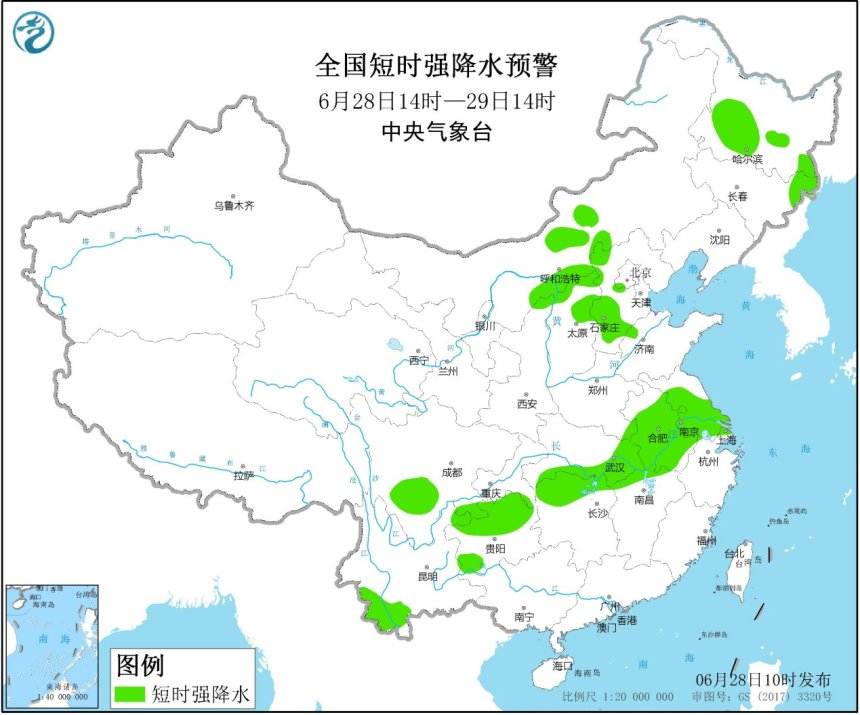

1.政府及相关部门按照职责做好防短时暴雨、防雷、防大风准备工作，气象部门做好人工防雹作业准备；
2.户外行人和工作人员减少户外活动，注意远离棚架广告牌等搭建物；
3.驱赶家禽、牲畜进入有顶蓬的场所，关好门窗加固棚舍；
4.相关水域水上作业和过往船舶采取回港规避或者绕道航行等积极应对措施，工地注意遮盖建筑物资，妥善安置易受暴雨、风雹影响的室外物品；
5. 检查城市、农田、鱼塘排水系统，做好排涝准备和对山洪、滑坡、泥石流等灾害的防御准备。
转载请注明“来源：中国天气网”编辑：张晗熙